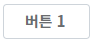
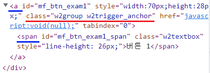
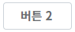
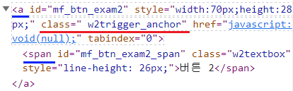
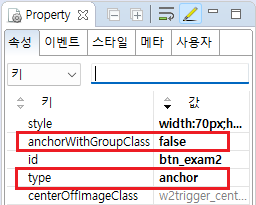

속성 'anchorWithGroupClass'의 설정 값 비교 예제입니다.
이 속성은 Trigger의 속성 'type'의 설정 값이 'anchor'로 지정된 경우에만 적용됩니다. 설정을 통해 브라우저에 생성할 HTML 요소의 속성 'class'에 'w2group'를 추가할지 여부를 지정할 수 있습니다. 브라우저에 생성된 HTML 요소의 구성은 동일합니다.
설정 값에 따른 동작은 아래와 같습니다.
"true" : [default] 속성 'class'에 'w2group'를 추가합니다.
"false" : 속성 'class'에 'w2group'를 추가하지 않습니다.
속성 'type'의 설정 값이 'anchor' 일 때, HTML 요소의 'class'에 'w2group' 추가하기
속성 'type'의 설정 값이 'anchor' 일 때, HTML 요소의 'class'에 'w2group' 추가하지 않기
브라우저 개발자도구의 Elements(요소)탭을 실행하고, Trigger의 HTML 요소의 'class'를 확인합니다.
STEP 1. 초기 상태를 확인합니다.
예제 영역 [(기본 설정) HTML 요소의 'class'에 'w2group' 추가하기]에 구성된 Trigger를 확인합니다.그림 1.브라우저(Chrome) 실행 예시

STEP 2. 실행된 결과를 확인합니다.
브라우저 개발자 도구를 통해 HTML 요소의 속성 'class'의 값을 확인합니다. 'class'의 설정 값 : w2group w2trigger_anchor 설정 값에 'w2group'이 포함되어있습니다.
브라우저에 랜더링된 HTML 구조
<a class="w2group w2trigger_anchor" id="mf_btn_exam1" style="width:70px;height:28px;" href="javascript:void(null);"> <span class="w2textbox " id="mf_btn_exam1_span">버튼 1</span> </a>
브라우저에 랜더링된 HTML Elements의 'id'는 실행 시점에 동적으로 부여되어 환경에 따라 다릅니다.
그림 2.브라우저(Chrome) 개발자 도구의 Elements 예시

브라우저 개발자도구의 Elements(요소)탭을 실행하고, Trigger의 HTML 요소의 'class'를 확인합니다.
STEP 1. 초기 상태를 확인합니다.
예제 영역 [HTML 요소의 'class'에 'w2group' 추가하지 않기]에 구성된 Trigger를 확인합니다.그림 3.브라우저(Chrome) 실행 예시

STEP 2. 실행된 결과를 확인합니다.
브라우저 개발자 도구를 통해 HTML 요소의 속성 'class'의 값을 확인합니다. 'class'의 설정 값 : w2trigger_anchor 설정 값에 'w2group'이 포함되어 있지 않습니다.
브라우저에 랜더링된 HTML 구조
<a class=" w2trigger_anchor" id="mf_btn_exam2" style="width:70px;height:28px;" href="javascript:void(null);"> <span id="mf_btn_exam2_span" class="w2textbox">버튼 2</span> </a>
브라우저에 랜더링된 HTML Elements의 'id'는 실행 시점에 동적으로 부여되어 환경에 따라 다릅니다.
그림 4.브라우저(Chrome) 개발자 도구의 Elements 예시

Trigger의 속성을 정의합니다.
[필수] anchorWithGroupClass="옵션 선택 값"
(옵션 설명)
- true: [default] HTML 요소의 속성 'class'에 'w2group'를 추가합니다.
- false: HTML 요소의 속성 'class'에 'w2group'를 추가하지 않습니다.
(예시)
예시) w2group을 추가하지 않음
anchorWithGroupClass="false"
[필수] type="anchor"
HTML 생성 시 'a' 태그를 사용합니다. 속성 'anchorWithGroupClass' 사용 시 필수 설정입니다.
그림 5.웹스퀘어5 SP5 스튜디오의 Property View(속성창) 예시 - HTML 요소의 'class'에 'w2group' 추가하지 않기

소스 코드 - HTML 요소의 'class'에 'w2group' 추가하지 않기
<!-- Trigger 의 소스 본문 예시 --> <xf:trigger type="anchor" anchorWithGroupClass="false"> <!-- 중략 --> </xf:trigger>
anchorWithGroupClass
type
[웹스퀘어5 SP5 개발 가이드] Trigger
링크 : https://docs1.inswave.com/sp5_user_guide/8df43d1f59fab704#75e98070aac6d3b7